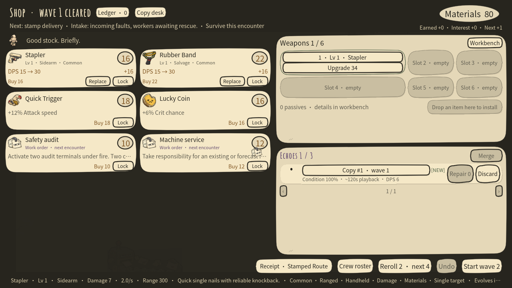
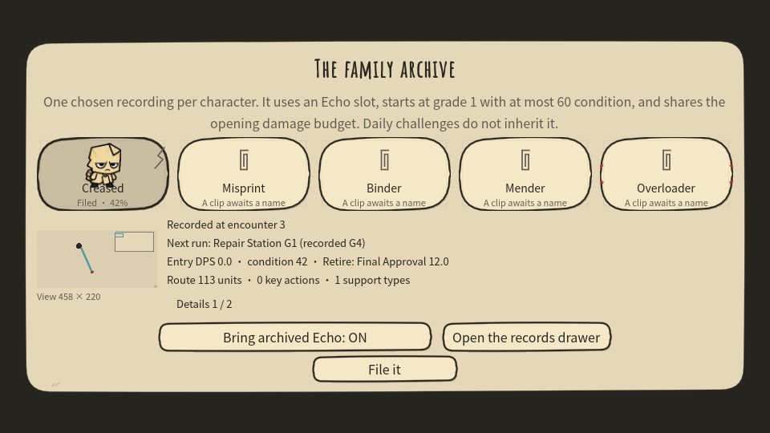

Leave a route
Each encounter records your path and loadout as an Echo.
ORIGINAL ABSENT · COPIES REPORT IN
You’re dead. Your shift isn’t.
A darkly comic paper-puppet auto-shooter.
Record your route. Fight beside your past.
ISSUE NOTEReplacement staff: also you.
FIELD RECORD / ON THE FACTORY FLOOR
Your weapons fire automatically. You decide where to go, what to keep, and when to retire your past.
Each encounter records your path and loadout as an Echo.
Your copy fights along its old route. Move around it, relay attacks, or put it to work on machines.
Wear leaves marks. Repair it, bind copies together, or retire one for a final skill.
PLEASE FOLLOW PROCEDURE / PAPERWORK INCLUDED
FORM 02-A
35 weapons. Six equipment slots. Assemble duplicates, choose an evolution, or deploy a paper hound, turret or repair station. You still have to balance the books.

Regret is not included in the budget.FORM 06-B
File an Echo worth keeping. A useful route, a support tool or the right retirement skill all give a copy a reason to stay.

An empty frame is a record, too.Deliver documents. Repair machines. Rescue workers. Negotiate. Stamps come down, paper jams, and signatures leave consequences.
FINAL PROCEDURE / SIGN IN PERSON
Three acts. Twelve encounters. Three supervisors. The people you saved, the machines you fixed and the copies you kept are all on the page. Leave alone, leave together, or stay and take over?
Debt does not choose your ending.
ISSUE INSTRUCTIONS / BEFORE YOUR SHIFT
Download the ZIP for your system, extract it and run the game. These links follow the latest published build.
The app has an ad-hoc integrity signature and is not notarized. Follow the included MAC_START_HERE.txt for the first launch.
The Windows build is unsigned and may trigger SmartScreen. On Linux, give the executable permission to run. Version 0.18.1 continues 0.17 and 0.18 mid-run saves. Earlier run formats need a new run; permanent unlocks, settings and Echo archives remain.
WASD / arrows to move; Shift for your role skill; E for machines; tap Space to retire an Echo, hold to choose one. Menus support mouse, keyboard and controller navigation.